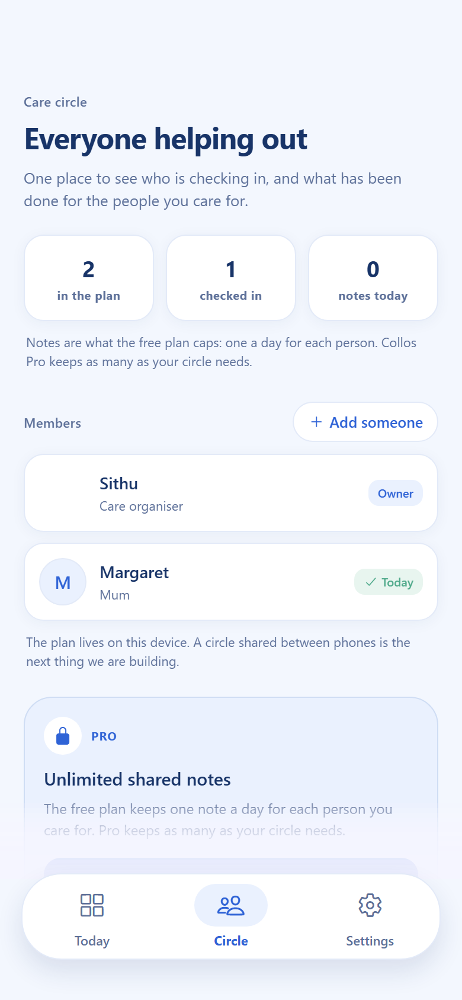
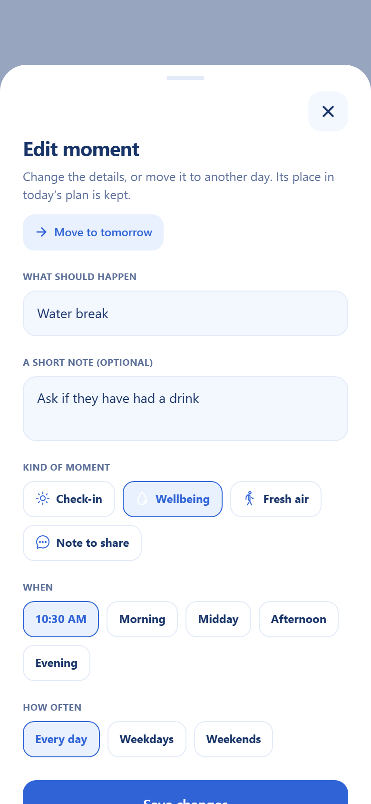

Evening note
“Share one good thing from today”
Free to start · No account needed
Care, together
for the small things that matter.
Collos turns check-ins, water breaks and shared notes into one calm daily plan for everyone who helps.
A native iPhone and Android app.

Care circle
Who is checking in, and what is done
Built in the open with
- Expo
- React Native
- TypeScript
- RevenueCat
- Vercel
HOW IT WORKS
Care, in three
small steps.
Care work is invisible and easy to drop. Collos takes one thing off your plate: remembering who is doing what, and when.
Set up who you care for
Add the people in your plan in about ten seconds. Switch between them in one tap, without losing your place.
Get a short plan for today
A check-in, a water break, a walk, an evening note — small enough that today actually happens.
Confirm, skip, or leave a note
What happened is recorded the moment you tap it, and still there when you come back tomorrow.
WHO IS IN THE PLAN
Everyone in the plan,
on one screen.
The circle shows everyone in the plan, who has been checked in on today, and every note kept on this device — with the organiser’s own card marked as the owner rather than counted as a check-in.
- See who is checked inOne glance at the people on today’s plan.
- Keep every note with the planWhat is written lives on this device, not on a server.
- Add people as the circle growsAnyone you care for gets their own plan and their own notes.

THE REAL APP
Two screens,
in the order you meet them.
Setup asks who you are caring for, and that is whose plan opens. From there every moment can be revised — renamed, set to weekdays, or moved to tomorrow.
- SetupOne person, a few seconds, no account to make.
- ReviseRename a moment, give it a rule, or move it to tomorrow.
Both frames are captures of the running app, not drawings of it.


PLANS
Free where it counts.
Paid where it's earned.
The care plan itself is free and stays free. Collos Pro is optional, and it is what pays for the shared circle we are building next.
Free
$0forever
The whole daily plan, for as many people as you care for.
- Today's plan, with confirm and skip on every moment
- Add your own moments to any plan
- One shared note a day for each person
- Everything kept on your device, with no account
OPTIONAL
Collos Pro
$4.99a month
or $39.99 a year save 33%
- Unlimited shared notes, instead of one a day
- Every note kept in one place on your device, still there after a restart
- Cancel any time from the store that billed you
Bought inside the app, through the App Store, Google Play, or RevenueCat Billing in the browser. Your store shows the price in your own currency.
No trial, no timers — the free plan stays free.
DOCS
Written down, not implied
Where your data actually lives, what Pro unlocks in code, and how to run Collos yourself.
FAQ
Asked,
answered plainly.
Including the questions a product page usually dodges.
Go deeper in the docs ↗Is Collos free?
Yes. Today's plan, every moment on it, adding your own moments, and one shared note a day are free — for as many people as you care for. Collos Pro is optional and nothing that already works stops working if you never buy it.
What does Collos Pro actually add?
One thing: it removes the shared-notes limit. The free plan keeps one note a day for each person; Pro keeps as many as your circle needs. Notes go to your device either way, and they are still there after a restart. That is the whole difference — we would rather sell one real feature than a list of promises.
Do I need an account?
No. There is no sign-up, no email address and no password. You say who you are caring for and the app opens straight into their plan, and there is nothing to verify before you can use it.
Where is my care data stored?
On your device, and nowhere else. Collos writes the plan, the confirmations, the moments you add and the notes to local storage — localStorage in the browser, the file system on a phone. There is no backend receiving it, which also means: if you delete the app, it is gone. Do not use Collos as your only record of anything important.
Can my sister and I share one care plan on our own phones?
Not yet, and this site will not pretend otherwise. Today the plan lives on one device, so a circle shared between phones is the next thing being built. Until it ships, the honest way to use Collos together is one device handed over — which is what the evening note is for.
How do I cancel or restore a subscription?
Collos Pro is billed by the App Store, Google Play or RevenueCat Billing, so cancelling happens where you bought it — your store account. If you reinstall or move device, open Settings in the app and tap Restore purchases. That screen also shows your app user ID and entitlement state, so support can find your record if something goes wrong.
Which devices does Collos run on?
Collos is a native iOS and Android app, built with React Native and Expo. The same codebase also exports to the web, which is what runs at app.collos.sithunyein.com — useful for trying it in a browser, and the build where the subscription goes through RevenueCat Billing.
Is Collos medical advice?
No. Collos coordinates everyday care between people: who checked in, who is bringing what, what still needs doing. It holds no medical records, offers no diagnosis, and does not replace a qualified care professional. In an emergency, contact local emergency services.
Who builds Collos, and can I read the code?
Collos is an independent project, MIT licensed. The source, the release runbook and the store listing copy are all public on GitHub, and the docs page links the interesting parts.
START WITH ONE SMALL THING
Make care feel
lighter.
Free to start. No account. A plan in under a minute.